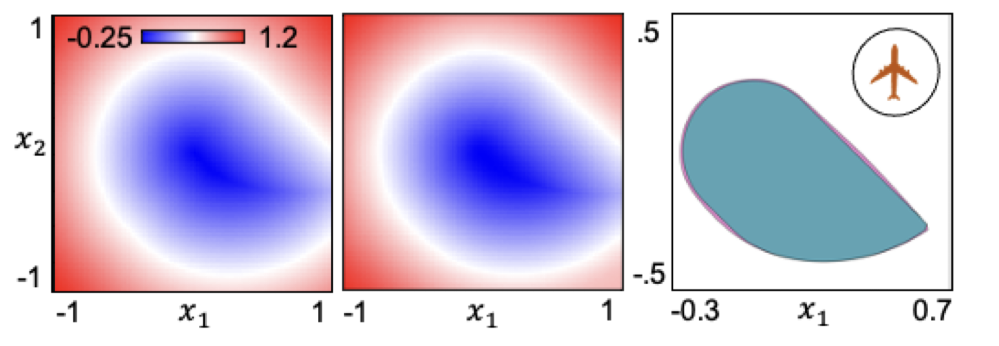

DeepReach, a reachability toolbox that leverages recent advances in neural PDE solvers to tractably solve high-dimensional reachability problems. The computational requirements of DeepReach do not scale directly with the state dimension, but rather with the complexity of the underlying reachable tube. DeepReach achieves comparable results to the state-of-the-art reachability methods, does not require any explicit supervision for the PDE solution, can easily handle external disturbances, adversarial inputs, and system constraints, and also provides a safety controller for the system.
[Paper] [Code]